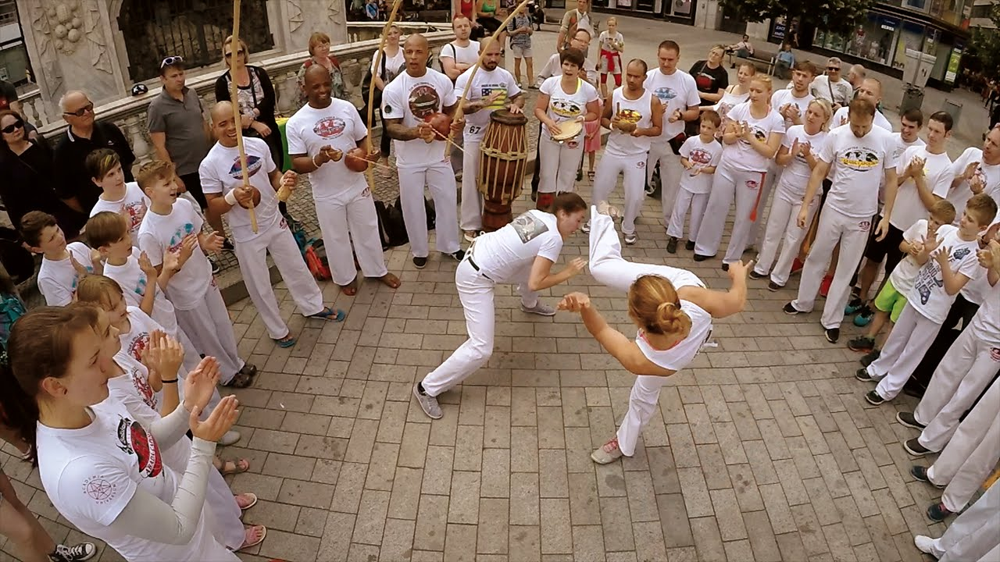

Capoeira blends martial arts, dance, music, and culture into one powerful experience.

Capoeira originated in Brazil during the 16th century among enslaved Africans brought by Portuguese colonizers. It developed as a unique form of resistance that blended combat techniques with music, rhythm, and expressive movement. By disguising martial training as dance, practitioners preserved their cultural traditions while preparing for self-defense.
Over time, capoeira evolved into a powerful symbol of resilience, freedom, and Afro-Brazilian identity. After being criminalized in the 19th century, it was later recognized as an important cultural practice and eventually gained international recognition.
Music plays a central role in capoeira. Traditional instruments include the berimbau, which leads the rhythm of the game, the atabaque (a tall hand drum), the pandeiro (tambourine), the agogô (double bell), and the reco-reco (percussion scraper). Together, these instruments create the rhythm that guides the movements inside the roda.
Today, capoeira is practiced worldwide as both a martial art and a cultural expression, preserving its historical roots while continuing to evolve across generations.